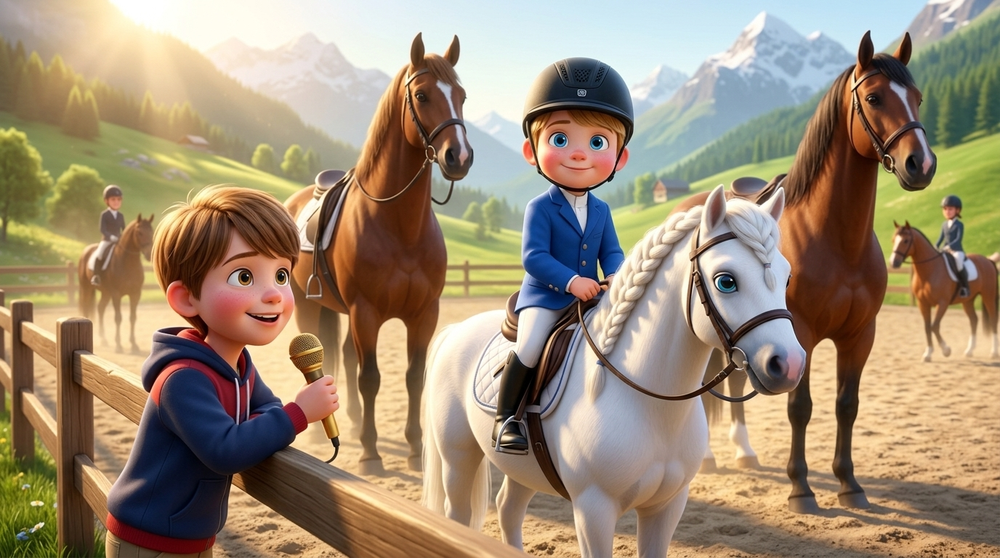
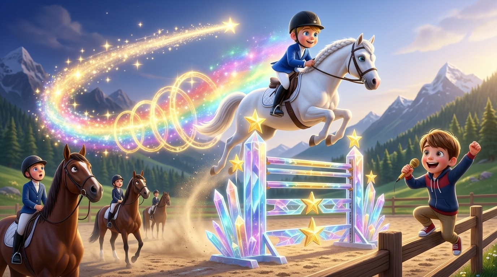
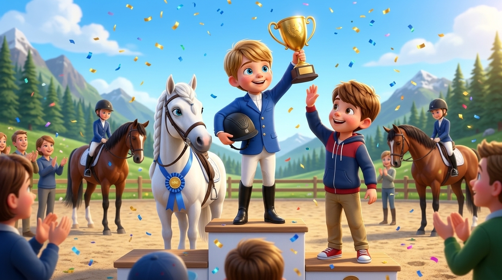
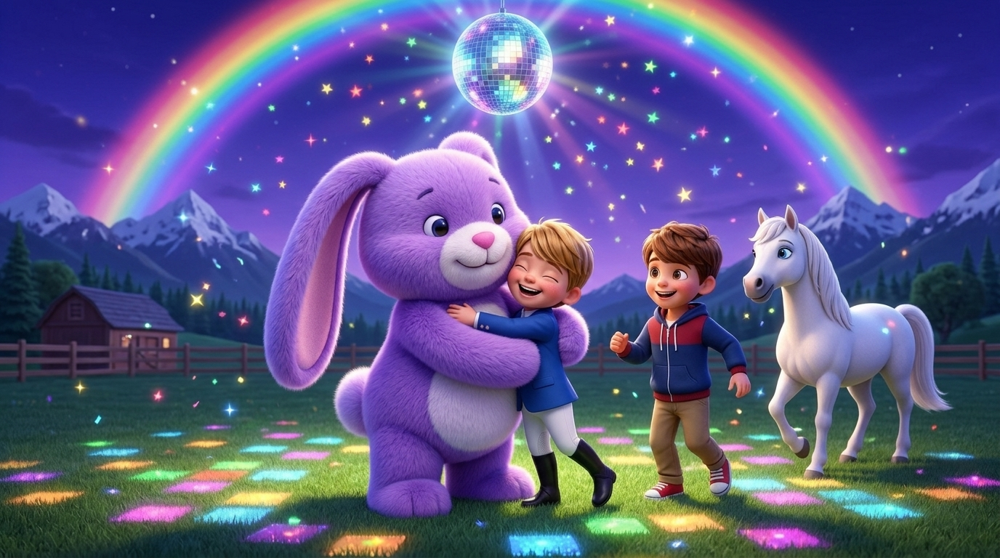

Ascolta la fiaba inventata da Ale per Sebi al Pony Club, narrata in italiano o in British English con sottofondo di pianoforte!

Al Pony Club di Zurigo il fratello maggiore Ale impugna il microfono dorato da narratore ufficiale a bordo campo per raccontare l'impresa del fratellino Sebi! In sella al suo candido pony bianco, Sebi si schiera senza paura fianco a fianco con i grandissimi cavalli da corsa, alti il doppio di lui.

Sebi affronta in gara ostacoli altissimi che non aveva mai provato a saltare prima. Parte così forte da correre alla velocità della luce: nessuno riesce quasi a vederlo mentre vola sopra le barriere lasciando una scia dorata di stelle sotto gli occhi entusiasti di Ale!

Tagliato il traguardo in un lampo di luce, Sebi sale sul gradino più alto del podio insieme al suo pony bianco e alza al cielo la Coppa d'Oro di tutto il Pony Club, mentre il fratello maggiore Ale gli batte il cinque sotto una pioggia di coriandoli!

Per festeggiare il campione esplode una magica Disco Party sotto un arcobaleno lucente ("Rainbow, Regenbogen!"). All'improvviso arriva un Pupurabbu grandissimo che stringe Sebi in un abbraccio soffice e gli dice: «Wow, Sebi, sei grande!» mentre Ale balla felice ed esclama: «Finito!»
Guarda il film animato completo di 40 secondi (4 atti × 10s) narrato in italiano dell'avventura di Sebi al Pony Club raccontata dal fratello maggiore Ale!
veo-2.0-generate-001 • Durata: 40s (4 Atti × 10s) • 720p HD • Narrato in Italiano
Papà Riccardo: «Ermete, Alessandro qui ha una storia per te. Vai! Vai Ale.»
Alessandro: «Una volta c'era Sebi e è andato a Pony Club, e era il più veloce di tutti! Era così veloce che andava... ehm... con i grandissimi cavalli! Era così... ehm... forte e coraggioso! E andava... ehm... a competire...»
Papà Riccardo: «A fare competizione.»
Alessandro: «...competizione dei salti che non ha mai provato da fare! Ma poi, quel giorno, era il primo! Era così veloce che nessuno l'ha potuto vedere! Era velocità della luce, e era velocissimo e bravissimo! Era il primo di tutta la Pony Club!»
Papà Riccardo: «Wow! Devi metterci degli elementi un po' fantasy, degli elementi interessanti della storia... per ora hai solo detto che ha fatto molto...»
Alessandro: «Poi alla... alla... ehm... end, c'è un... una celebrazione per Sebi, come che fanno la disco party, e sì, e poi c'è un rainbow, Regenbogen, e c'è anche Pupurabbu grandissimo che lo abbraccia e dice: "Wow, Sebi, sei grande!" Eee... sì...»
Papà Riccardo: «Quando hai finito puoi chiedere?»
Alessandro: «Finito!»